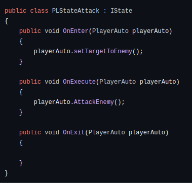

Tat tan tat ve State Machine trong Game Developer
State Machine (hay còn gọi là trạng thái máy) là một Design pattern phổ biến thường đước sử dụng trong lập trình game. State machine được thực hiện dựa trên State pattern (Một trong những design patten phổ biến trong lập trình). Theo định nghĩa: “State Pattern là một trong những Pattern thuộc nhóm hành vi (Behavior Pattern). Nó cho phép một đối tượng thay đổi hành vi của nó khi trạng thái nội bộ của nó thay đổi. Đối tượng sẽ xuất hiện để thay đổi lớp của nó.” Vì thế đây là một Design Pattern rất hữu dụng khi lập trình game. Trong lập trình game, mọi thứ đều được tương tác trên đối tượng, tùy mỗi đối tượng sẽ có các trạng thái khác nhau, sẽ có các hành động khác nhau. Nên để quản lý từng trạng thái của đối tượng đó, State Machine sẽ là một công cụ rất hữu ích để giúp ta có thể quản lý, bảo trì hay mở rộng code khi cần.